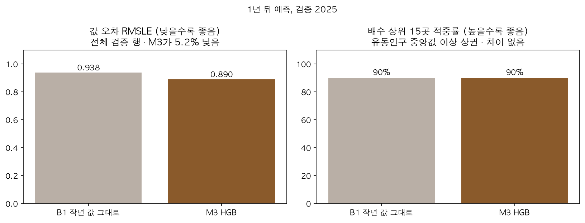
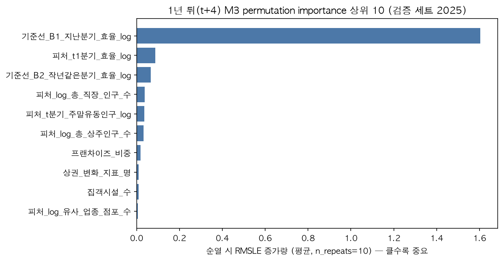
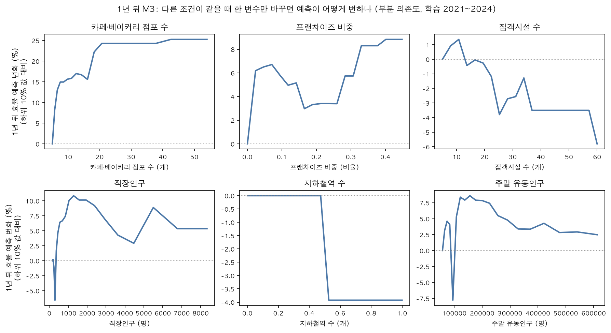

다음 분기는 관성,
1년 뒤는 상권 조건이 갈랐다
1년 뒤 주말 효율을 예측하는 회귀 모델을 기준선과 비교하고, 어떤 상권 조건이 예측을 움직이는지 확인했습니다.
1. 문제 정의맞힐 값과 검증 설계
| 항목 | 내용 |
|---|---|
| 타겟 | log(1 + t+4분기 주말 카페·베이커리 매출 ÷ (t+4분기 토·일 유동인구 ÷ 1,000)) |
| 행 단위 | 상권 × 분기 |
| 예측 시점 | t분기까지 아는 값으로 t+4분기(내년 같은 분기) 예측 — 미래 정보는 피처 금지 |
| 분할 | 타겟 분기 2021~2024 학습 / 2025 검증 (시간 순, 튜닝 없음) |
| 지표 | 값 지표: RMSLE(효율이 크게 치우쳐 '몇 배 틀렸나'를 봄), MAE(log)·MAE(원) 보조 순위 지표: 순위 상관 · 상위 15곳 적중률 — 목적이 '어디부터 열까'라서 순서를 직접 봄 |
2. 기준선과 모델 비교1년 뒤에서만 상권 조건이 기준선을 이겼다 (RMSLE 기준)
막대에 마우스를 올리면 값이 보입니다. 낮을수록 좋습니다. 검증 2025년, 다음 분기 4,290행 · 1년 뒤 4,229행.
| 방법 | 다음 분기 RMSLE | 1년 뒤 RMSLE | 1년 뒤 MAE(log) | 1년 뒤 MAE(원) |
|---|---|---|---|---|
| B1 지난 값 그대로 | 0.670 | 0.939 | 0.407 | 22.0만 |
| B3 뻔한 요인 (유형·유동인구·역·대학) | 1.887 | 1.844 | 1.267 | 88.8만 |
| M2 과거 효율 3개 | 0.667 | 0.918 | 0.432 | 28.6만 |
| M3 과거 효율 + 상권 조건 | 0.676 | 0.890 | 0.436 | 29.7만 |
| M4 상권 조건만 | 1.356 | 1.356 | 0.825 | 51.3만 |
지난 분기 그대로(B1)를 어떤 모델도 의미 있게 이기지 못했다. 상권 조건을 더하면 오히려 RMSLE가 1.4% 나빠졌다(0.667 → 0.676).
M3가 B1 대비 RMSLE −5.2%(0.939 → 0.890), 과거 효율만 쓴 M2 대비 −3.1%. 그래서 메인 타겟을 1년 뒤로 정했다.
M3는 크게 틀리는 경우를 줄였지만 평균 오차는 B1보다 크다(22.0만 → 29.7만 원). 그래서 M3의 값을 그대로 믿지 않고, 순서를 더 잘 맞히는지 따로 확인했다(아래).
2-1. 순위 지표순서는 '작년 값 그대로'와 같았다
결정은 '어디부터 열까'라서 순서를 맞혔는지 따로 봤습니다. 검증 2025년, 주말 유동인구 중앙값 이상 상권, 타겟 분기별 평균.

| 범위 | 방법 | 순위 상관(ρ) | 상위 15곳 적중률 |
|---|---|---|---|
| 효율 순위 | B1 작년 값 그대로 | 0.968 | 83% |
| 효율 순위 | B3 뻔한 조건 | 0.632 | 28% |
| 효율 순위 | M3 HGB | 0.967 | 83% |
| 배수 순위 (후보 선정 방식) | B1 작년 값 그대로 | 0.936 | 90% |
| 배수 순위 (후보 선정 방식) | M3 HGB | 0.932 | 90% |
B1과 M3가 고른 배수 상위 15곳은 분기마다 14~15곳이 겹친다. M3의 이득은 값의 크기를 덜 틀리는 것이다.
① 같은 조건 대비 배수(큰 상권 쏠림 제거) ② 임대료. 분기 갱신 때는 '작년 효율 ÷ 같은 조건 기대 효율'만으로 거의 같은 후보를 뽑을 수 있다.
3. 무엇이 1년 뒤 효율을 움직이나카페가 모인 상권은 1년 뒤도 높다

다른 조건을 그대로 두고 한 변수만 하위 10% → 상위 10% 값으로 바꿀 때의 예측 변화(부분 의존도)와 선형회귀 부호가 같은 방향인 것만 결론에 씁니다.

| 변수 | 1년 뒤 효율 예측 변화 | 해석 |
|---|---|---|
| 카페·베이커리 점포 수 (5 → 54개) | +25.3% | 과거 효율이 같아도 카페가 모인 상권이 1년 뒤 더 높다 (EDA 가설 3과 같은 방향) |
| 프랜차이즈 비중 (0 → 0.45) | +8.8% | 브랜드가 검증한 수요가 있는 상권일 수 있음 (가설) |
| 직장인구 (159 → 8,337명) | +5.3% | 평일 수요 기반이 주말에도 연결되는 것으로 보임 (가설) |
| 집객시설 수 (5 → 60개) | −5.8% | 효율 수준과는 +였지만 과거 수준을 통제하면 − (이미 높아 더 오르기 어려움, 가설) |
| 지하철역 (0 → 1개) | −3.9% | 위와 같은 해석 (가설) |
| 주말 유동인구, 상주인구 | — | 두 방법의 방향 불일치 → 해석 보류 |
기본 계산 방식(recursion)이 범주형 변수가 있는 이 모델에서 일부 변수를 0으로 잘못 계산했다. 예측을 직접 다시 계산하는 방식(brute)으로 바꾸고 선형회귀 부호와 교차 확인했다.
4. 모델 활용뻔한 답을 피해 후보 고르기
검증을 마친 M3를 2021~2025 전체로 다시 학습해 2026년 효율을 예측했습니다. 예측 효율 순으로만 고르면 상위 15곳이 모두 발달상권·관광특구라, 뻔한 조건(B3)으로 기대되는 효율 대비 몇 배인가로 후보 15곳을 골랐습니다(골목 14 · 전통시장 1). 15곳의 연도별 효율 백분위는 2021~2025년 내내 57~94로, 한 해만 튄 상권이 아닙니다.